Stacks🕳️
Stack ADT
ADT:
- only talk about features/operations✔️
- no implementation❌

Tip
You can only get access to the one on top→ Last In First Out (LIFO)
- Definition: A list with the restriction that insertion and deletion can be performed only from one end, called the top.
| operations | O(1) |
|---|---|
(1)Push |
push x into the stack |
(2)Pop |
Remove the latest element from stack |
(3)Top |
return element at the top |
(4)IsEmpty |
return T/F |
Info
Application
- Function calls/Recursion
- undo in an editor
- balanced parentheses
(){}[]
Implementation in C/C++
We can implement stacks in :
a) arrays
b) linked list
1) Array implementation
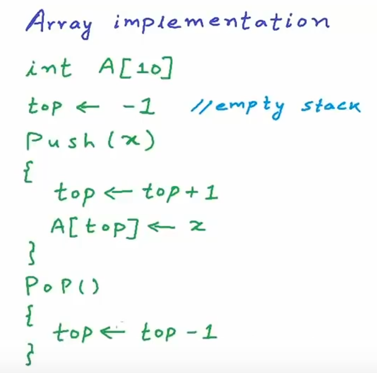
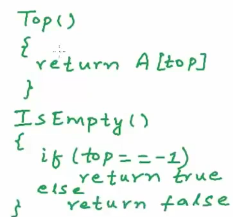
logical diagram
Warning
Only be done when an overflow doesn’t happen
Solution: create a larger array.(twice the size of the smaller array) Copy all element in the new array
Push O(1)–Best O(n)–Worst O(1)–Average O(n) for n pushes
#define MAX_SIZE 101
int A[MAX_SIZE];
int top=-1;
void Push(int x) {
if(top==MAX_SIZE-1) {
printf("Stack Overflow\n");
}
A[++top]=x;
}
void Pop() {
if(top==-1) {
printf("Stack Underflow\n");
}
top--;
}
int Top() {
return A[top];
}
void Print() {
int i;
printf("Stack:\n");
for(i=top;i>=0;i--) {
printf("%d\n",A[i]);
}
printf("\n");
}
int main() {
Push(2);Print();
Push(5);Print();
Push(10);Print();
Pop();Print();
Push(12);Print();
}
2) Linked List Implementation
insert a new in the linked list
- create a new node
- insert /delete
- at the end(tail)–
O(n) - at beginning–
O(1)
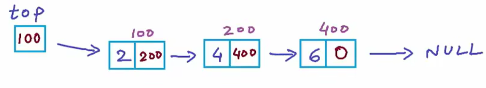
struct Node {
int data;
Node *link;
};
struct Node *top=NULL;//it means the same as Node *head=NULL;
void Push(int x) {
Node *temp=new Node;
temp->data=x;
temp->link=top;
top=temp;
}
void Pop() {
Node *temp;
if (top==NULL) {
printf("Stack is empty\n");
return;
}
temp=top;
top=top->link; //making top point to the second node
delete temp; //in C++ use new/delete instead of malloc/free in C
}
void Top() {
if (top==NULL) {
printf("Stack is empty\n");
return;
}
printf("%d\n",top->data);
}
void IsEmpty() {
if (top==NULL) {
printf("Stack is empty\n");
return;
}else {
printf("Stack is not empty\n");
}
}
void Print() {
Node *temp=top;
printf("Stack is : ");
while(temp!=NULL) { //traversal of the linked list
printf("%d ",temp->data);
temp=temp->link;
}
printf("\n");
}
int main() {
Push(5);Print();IsEmpty();
Pop();Print();IsEmpty();
Push(6);Print();IsEmpty();
Push(7);Print();IsEmpty();
Push(8);Print();IsEmpty();
return 0;
}
Note
- Don't need to worry about overflow
- use memory only when needed ->more graceful
Using stack to reverse
- 1) Reverse a string 2) Reverse a linked list
1) Reverse a string
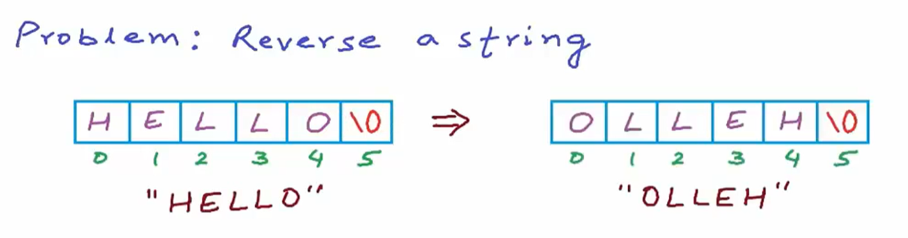
use the characteristics of Stack –(LIFO)
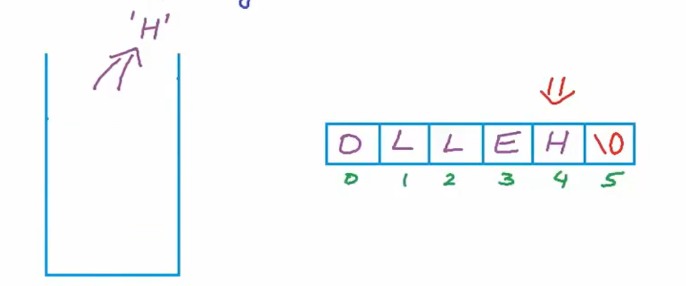
#include <stack> //stack from standard template library
#include <iostream>
using namespace std;
void Reverse(char C[],int n) {
stack<char> S; //create a stack
//loop for push
for(int i=0;i<n;i++) {
S.push(C[i]);
}
//loop for pop
for(int i=0;i<n;i++) {
C[i]=S.top(); //overwrite the character at index i
S.pop(); //perform pop
}
}
int main(){
char C[51];
printf("Eneter a string: ");
gets(C);
Reverse(C,strlen(C));
printf("Output is %s",C);
}
Note
- Time-Complexity=
O(n)- Space-Complexity=
O(n)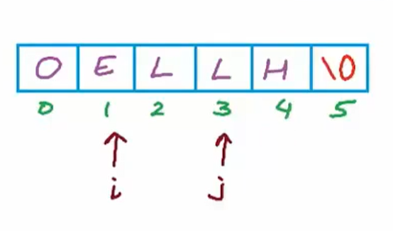
- easier way
- swap char[i] and char[j] while i<j;
2) Reverse a linked list
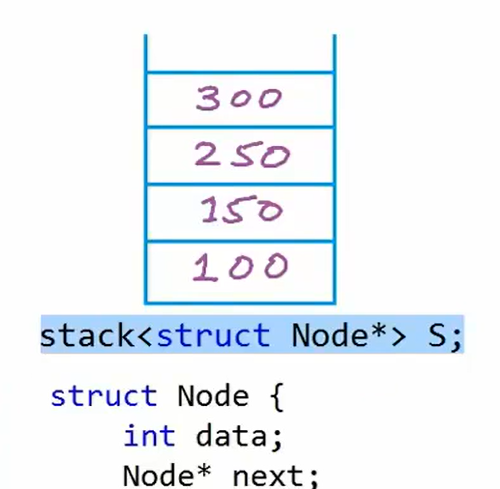
| Iterative solution(Explicit Stack) | Recursive solution(Implicit Stack) |
|---|---|
| time–O(n) | time–O(n) |
| Space–O(1) | Space–O(n) |
explicit way
void Reverse() {
if(head==NULL) return;
stack<Node*>S;
while (temp!=NULL) {
//To push all references (traversal)
S.push(temp);
temp=temp->next;
}
Node *temp=S.top();
head=temp;
S.pop;
while(!S.empty()) {
temp->next=S.top();
S.pop();
temp=temp->next;
}
temp->next=NULL;
}
Check for balanced parentheses
solution:
- scan from left to right
- if opening symbol, add it to a list(Push it in a stack)
- if closing symbol, remove last opening symbol in list(Pop it from a stack)
- should end with an empty list
Check for balanced Parentheses(exp){
n←length(exp)
Create a stack S;
for i from 0 to n-1{
if (exp[i] is "(" or"[" or "{"){
Push(exp[i])
}else if(exp[i] is ")" or"]" or "}")
if(S is empty){
return false;
}else{
Pop()
}
}
}
}
if S is empty true
else: false
#include <string.h>
#include <stdbool.h>
bool CheckforParentheses(char* expression) {
int n = strlen(expression);
char S[100];
int top = -1;// Stack to store the parentheses
for (int i = 0; i < n; i++) {
if (expression[i] == '(' ||
expression[i] == '[' ||
expression[i] == '{' ) {
S[++top] = expression[i];
} else if (expression[i] == ')' ||
expression[i] == ']'||
expression[i]=='}') {
if (top == -1) {
return false;
} if (
(expression[i] == ')' && S[top] == '(') ||
(expression[i] == ']' && S[top] == '[') ||
(expression[i] == '}' && S[top] == '{')) {
top--;
}else {
return false;
}
}
}
return top==-1;//return true if all parentheses are matched
}
int main() {
char expression[100];
printf("Enter an expression: ");
fgets(expression, sizeof(expression), stdin);
expression[strcspn(expression, "\n")] = '\0'; //Remove \n from string
CheckforParentheses(expression);
if (CheckforParentheses(expression)) {
printf(" The expression is valid\n");
} else {
printf("The expression is invalid\n");
}
return 0;
}
Infix,Postfix,Prefix
1）Intro
①Infix
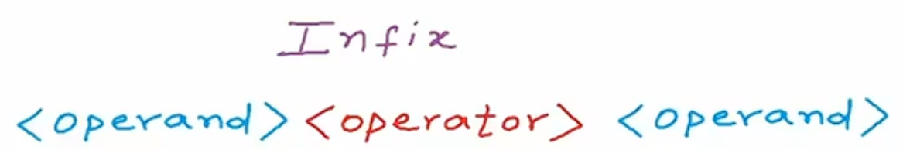
②Prefix
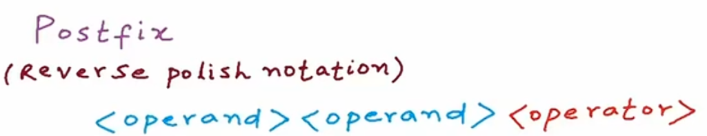
③Postfix
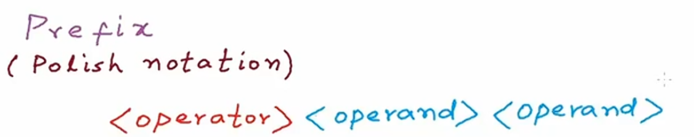
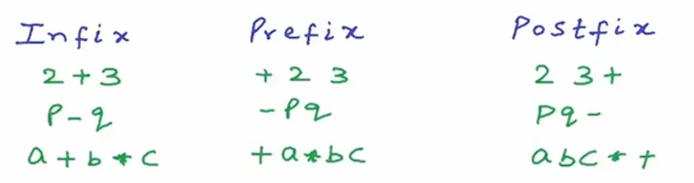
2）Evaluation of Prefix and Postfix expressions
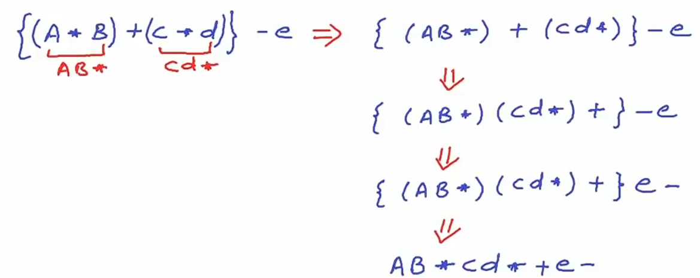
Success
Postfix：
Look for pattern
<num><num><operator>(from left to right)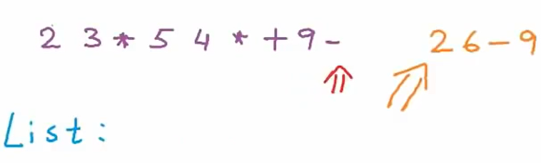
//Sudo code EvaluatePostfix(exp){ create a stack S; for i to lenngth(exp)-1{ if(exp[i] is operand){ Push(exp[i]) }else if(exp[i] is operator){ op2 Pop; op1 Pop; res=Preform(exp[i],op1,op2); Push(res) } } return top of stack }Prefix：
- Look for pattern
<num><num><operator>- Difference from Postfix: scan from right to left
3）Infix to Postfix
//Sudo code
InfixToPostfix(exp){
create a stack s;
res->empty string;
for i from 0 to length (exp)-1{
if exp[i] is operand {
res<-res+exp[i];
}
else if exp[i] is operator{
while(!=s.empty()&&HasHigherPrec(s.top(),exp[i])){
res<-res+s.top();
s.Pop()
}
s.Push(exp[i]);
}
while(!s.empty()){
res<-res+s.top();
s.pop();
}
}
return res;
}